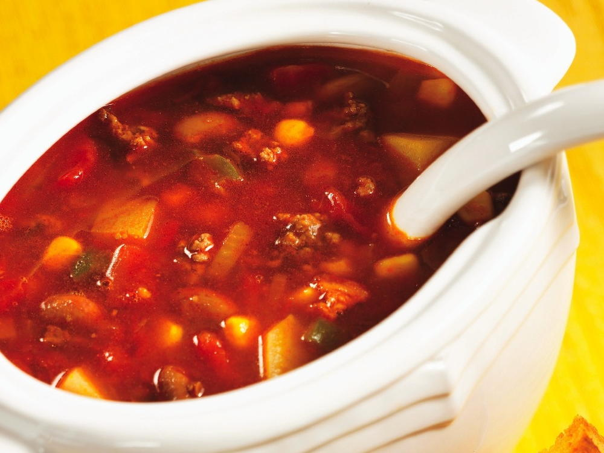

Cowboy Soup

Dish Description
Memories of this soup include bringing constant sibling rivalry to a quiet peace on the rare occasions it was made, so it holds a special place in my wife's heart. It's filling, it heals, and it's good soup.
Ingredients
- roast beef
- cabbage
- onion
- carrot
- garlic
- celery
- potatoes
- diced tomatoes - 1 can
- corn - 1 can
- beef broth
- thyme
- rosemary
- oregano
- black pepper
- sea salt
Steps
- Cook your roast, then shred the meat for preparation.
- Cut up your veggies however you prefer consuming them.
- Roast your veggies in butter or oil.
- Bring your broth to a boil, then reduce heat and simmer.
- Start with your potatoes, then mix in the rest of your vegetables.
- Season the crap out your soup at this point, letting the seasonings absorb into your ingredients. After 20 minutes of simmering, put in the meat and continue to simmer.
- Serve up and enjoy the silence good food brings!